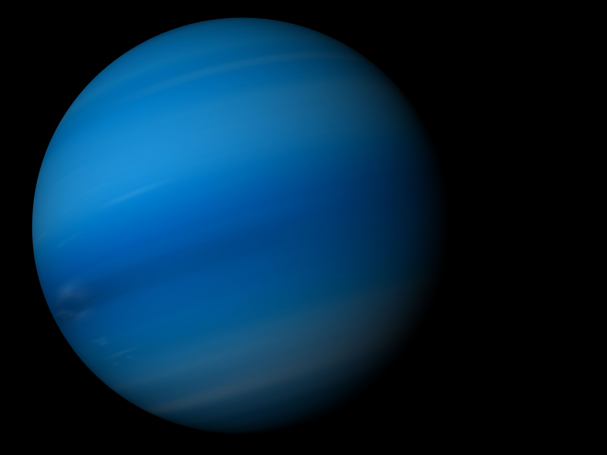

What does Neptune look like?

Voyager 2 took this picture of Neptune in 1989.

Clouds streak across Neptune.

Neptune is a very cold, windy world.

Neptune is dark, cold, and very windy. It's the last of the planets in our solar system. It's more than 30 times as far from the sun as Earth is. Neptune is very similar to Uranus. It's made of a thick fog of water, ammonia, and methane over an Earth-sized solid center. Its atmosphere is made of hydrogen, helium, and methane. The methane gives Neptune the same blue color as Uranus. Neptune has six rings, but they're very hard to see.
Voyager 2 took this picture of Neptune in 1989.
Clouds streak across Neptune.
Neptune is a very cold, windy world.